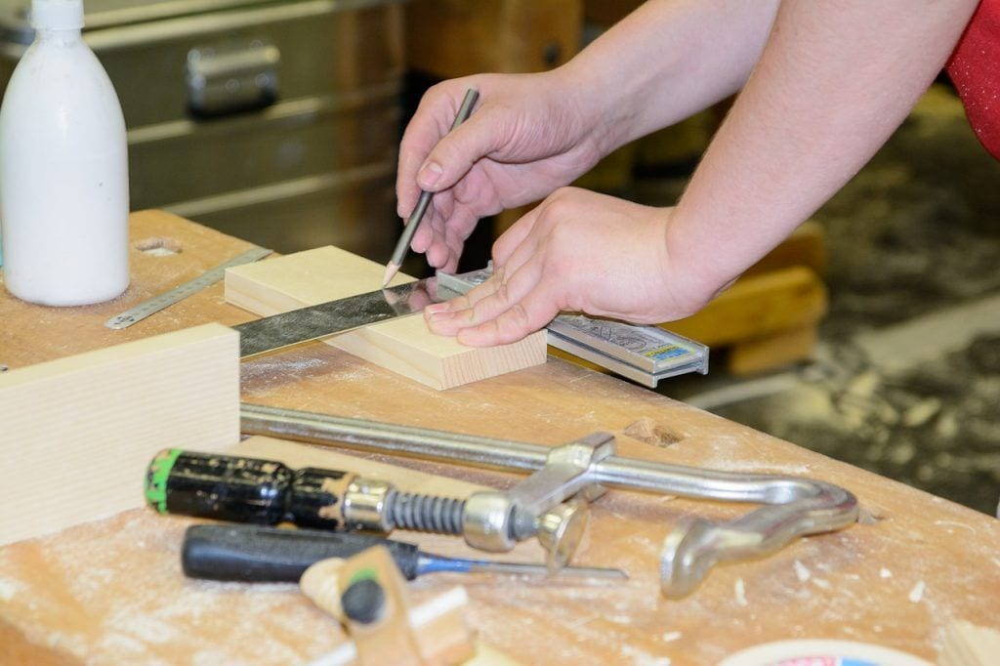
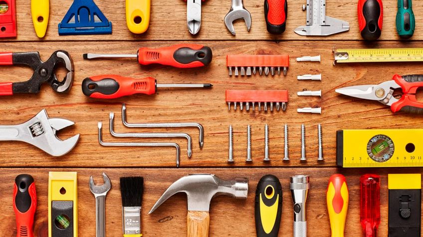

Actividad que permite emplear métodos manuales, con creatividad
propia y sin necesitar de la ayuda de un profesional, tan solo debemos
contar con materiales y herramientas de fácil uso que podrás conseguir en
tu ferretería o centro de bricolaje.
El bricolaje es la actividad manual que hace una persona como
aficionada, sin tener que recurrir a los servicios de un profesional, para la
mejora, creación, reparación o mantenimiento en especialidades como
carpintería, albañilería, fontanería, electricidad, etc.
El bricolaje es una actividad creativa que hace lo preexistente por
medio del empleo de los más variados recursos; para la mayoría de las
personas es una actividad entretenida, fácil, beneficiosa, apasionante para
la salud.
En las ferreterías venden yeso o una mezcla preparada llamada
mastique, un producto que puedes utilizar para reparar los huecos que haya
en las paredes. Lo que tienes que hacer es lo siguiente: con la ayuda de una
paleta plana pon la mezcla en la pared y extiéndalo hasta que quede bien
lisa. Déjalo secar, luego pasa una lija para remover los excedentes y deja la
superficie completamente lisa. Después pinta con el color de tu preferencia.
Fijación del inodoro
Solamente necesitas llaves ajustables, llaves de remplazo, teflón para
recubrir y evitar goteras y mangueras. Con esto conseguirás mantener el
trono de tus pensamientos en condiciones óptimas. Ajusta muy bien la tapa
del inodoro para que no se mueva al sentarse.

Cambiar un bombillo
Este proyecto es el más fácil dentro de las reparaciones de la casa.
Solamente debes remover la bombilla quemada, girando en sentido
contrario, saca la pieza malograda y luego sustitúyala. Para evitar
accidentes tienes que desconectar la corriente principal.

Colgar imágenes
Esta labor es entretenida y sencilla, puedes diseñar una plantilla con
la forma en que deseas que quede las fotos en la pared. Luego consigue un
martillo, clavos y empieza a trabajar. Si no sabes qué tipo de clavos utilizar,
pídele asesoría al vendedor de la ferretería.